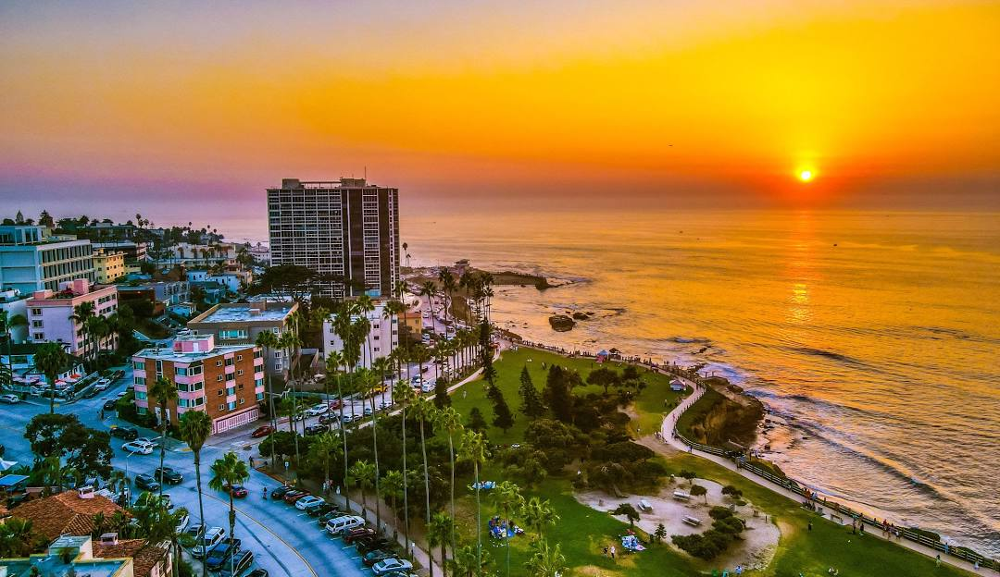

De patria a patria
Un viaje épico de Kentucky a Burundi pasando por Gales y Ucrania

Conoce un poco mejor los lugares de los que proceden tus colegas en línea
Todo ser humano es un artista, un ser de la libertad, llamado a participar en la transformación y reforma de las condiciones, el pensamiento y las estructuras que conforman e influyen en nuestras vidas.
— Joseph Beuys
La ciudad de TripleTen ha reunido a profesionales de diferentes rincones del mundo. Hoy, la Galería de Arte TripleTen se enorgullece de presentar historias y fotografías de algunas de las personas que dedican su tiempo y esfuerzo a hacer que los futuros profesionales de la tecnología de esta ciudad se sientan como en casa. Cada uno de nosotros tiene una historia única sobre el lugar del que procede. No dudes en añadir a nuestra colección tu propia historia y una obra de arte visual dedicada a tu ciudad natal. No importa de dónde seas, nos alegra que seas nuestro vecino.


Cricieth, Gales

Las ruinas medievales del castillo de Cricieth dominan la ciudad
desde una roca que extiende sobre el mar. Se cree que fue
construido por Llewelyn el Grande en el S. XIII. 800 años
después, la autodenominada Perla de Gales en las costas de
Snowdonia, se ha convertido en un popular destino turístico
durante los meses de verano.
A pocos pasos de camino al castillo, puedes disfrutar de los
mejores helados del mundo en Cadwalader's, cuyo ingrediente
secreto se rumorea que son algas marinas de la localidad. Otra
cosa por la que es famosa Cricieth es por haber ganado el premio
*Gales en flor* durante cinco años seguidos por sus
espectaculares muestras florales alrededor de la ciudad. También
vio nacer a David Lloyd George, el único galés que ha sido
Primer Ministro del Reino Unido.
Berea, EE. UU.

Berea es una pequeña ciudad ubicada en la parte central de
Kentucky. La ciudad está rodeada por hermosos bosques y campos.
Es conocida como la capital de la artesanía del estado, y sus
visitantes hallarán infinitas posibilidades para ir de compras:
tiendas de joyas, velas y artículos de madera artesanales;
galerías, talleres de vidrio y más. La ciudad celebra un
festival anual que rinde tributo al "spoonbread", un platillo
local hecho de pan de maíz y que se sirve con una cuchara de
madera.
Aunque, probablemente es mejor conocida por su universidad. El
Berea College fue fundado en 1855 y fue la primera universidad
sureña integrada racialmente, así como la primera en ser
coeducacional. Algo que en cierta manera la hace única, es que
no cobra colegiatura: cada estudiante recibe una beca del 100%.
Muramvya, Burundi

Muramvya es una de las 18 provincias de Burundi. Durante la
época del reino, Muramvya fue su capital; y en 2017, gracias a
su paisaje cultural y natural, se añadió a la Lista provisional
de patrimonio mundial de la UNESCO. Se encuentra ubicada en el
centro de Burundi, entre las capitales política y económica del
país.
Su clima es más bien frío durante la noche, pero durante el día,
podrías pensar que estás en el paraíso. A sus 2,665 metros
(8,743 ft) sobre el nivel del mar, el Monte Teza es uno de los
lugares más fríos de la provincia. Pero es justo esa brisa
fresca la que da pie a una de las más grandes plantaciones de té
y café del país, y que representa la mayoría de las
exportaciones de Burundi.
El Parque nacional de Kibira, una de las mayores reservas de
vida silvestre para los simios, ocupa parte de cuatro
provincias, incluyendo Muramvya. Este parque nacional se
encuentra en las cúspides de las hermosas montañas de la
Divisoria Congo-Nilo, cuyas alturas oscilan entre 1,550 y 2,660
metros. Está lleno de hermosa vegetación, y es una fuente para
los diversos ríos y arroyos que proporcionan agua alrededor del
país.
San Diego, California

San Diego es una ciudad costera en el sur de California, conocida por su clima cálido,
playas, y diversas atracciones. Es la segunda ciudad más grande de California y ofrece
una mezcla de cultura playera y ambiente urbano sofisticado. Se encuentra cerca de la
frontera con México y es una ciudad binacional junto con Tijuana en el estado mexicano
de Baja California.
La ciudad disfruta de un clima mediterráneo con temperaturas suaves durante todo el año,
lo que lo convierte en un destino popular para actividades al aire libre. Cuenta con numerosas
playas famosas como La Jolla, Coronado y Mission Beach, ideales para nadar, surfear, tomar el sol
y practicar deportes acuáticos. Además de las playas y atracciones. San Diego ofrece oportunidades
para practicar senderismo, ciclismo, paseos en barco y muchas otras actividades al aire libre.
San Diego ofrece una amplia gama de atracciones, incluyendo el Zoológico de San Diego,
SeaWorld, Balboa Park (con museos y jardines), y la histórica Old Town. La ciudad tiene una rica historia
y cultura, con influencias mexicanas y españolas evidentes en su arquitectura y gastronomía.